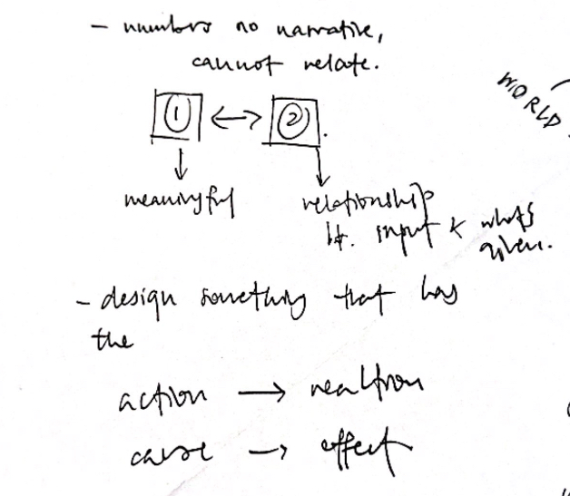
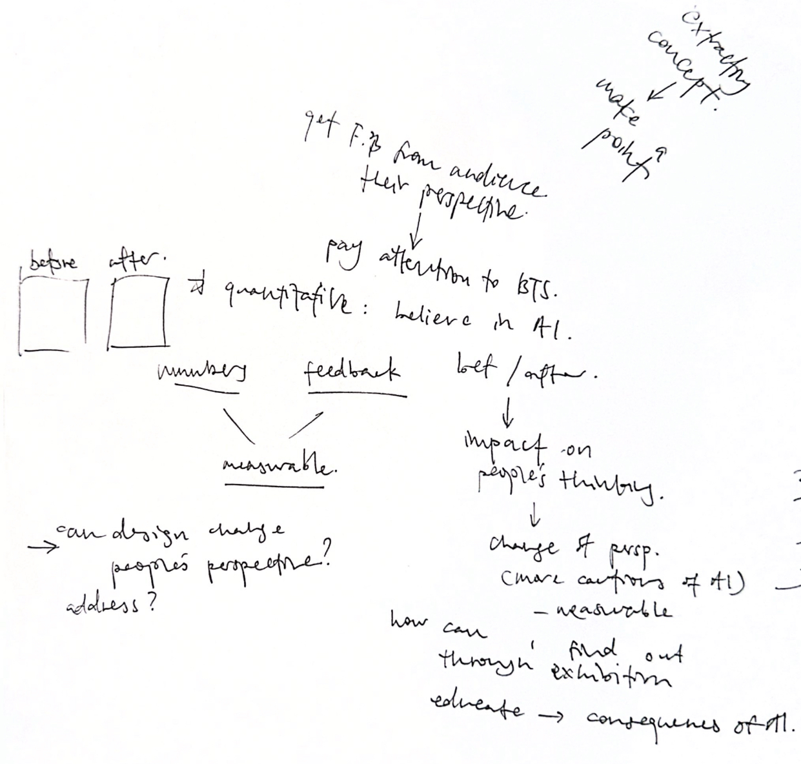

Physical Prototype 1
Over the holidays, I received detailed feedback from my lecturers on both my dissertation and graduation project. This week's consultation provided an opportunity to revisit these comments together and unpack them more clearly. Through discussion, we clarified key issues around my third pillar: exhibition design, coherence, and how the work should come together moving forward.
Materialising the Digital
Throughout this project A-I: Algorithmic Identities, the core concern has been the invisibility of algorithmic systems, and how they quietly shape identity through datafication, feedback loops, and behavioural influences. While these processes operate computationally, their effects are lived, embodied, and emotional.
Materialising the project in physical form is an important step in translating abstract algorithmic operations into experiences that can be sensed, encountered, and questioned. Rather than remaining on screens where algorithmic logic often feels seamless and intangible, physical materialisation introduces friction, scale, and presence, which makes the systems that govern our digital identity more perceptible to the body, as well as the mind.
Hologram Technology
No gloves, no depth camera. Just a Pi, a tiny LCD, and a reflective acrylic pyramid. A simple way to
combine CV, simulation, and physical display into something
playful and surprisingly intuitive.
• A Raspberry Pi camera tracks your hand with basic computer vision
• A boids simulation runs on the Pi (separation, alignment, cohesion)
• The LCD displays the swarm from a mirrored angle
• The acrylic pyramid reflects it as a floating hologram
• Move your hand closer and the flock follows
Physical Prototype 1: Identity Compression
In my dissertation, datafication is defined as the process through which human actions, expressions, and experiences are translated into quantifiable data that can be stored, analysed, and acted upon. This transformation reduces complex, subjective human states into discrete data points, forming what Haggerty and Ericson describe as the data double, a partial and operational version of the self that circulates within computational systems
The FROM WORD → NUMBER → LABEL experiment materialises this process at its most fundamental level. Participants begin with natural language, selecting a short statement that reflects an internal state or identity. This input represents the richness and ambiguity of human self-expression. Once submitted, the system immediately converts this statement into a numerical value, followed by a fixed categorical label. This sequence mirrors the logic of datafication: meaning is not preserved, but translated into formats that are legible to machines.
Crucially, this experiment does not attempt to replicate real algorithmic systems; instead, it physically stages the act of reduction itself, making visible how complex human expression is simplified into data. The numerical output functions as a stand-in for quantifiable signals such as engagement scores, probabilities, or confidence values commonly used in algorithmic systems. The resulting label demonstrates how identity becomes actionable only after it has been simplified into data.
By separating human language and data output across two physical displays, the experiment makes visible the conceptual gap between lived experience and its datafied representation. In doing so, it foregrounds the first step of algorithmic identity formation: the moment when the self becomes measurable, sortable, and classifiable.
Consult Feedback
➀ WORLD → NUMBER → LABEL
Andreas pointed out that the framing should shift from WORD to WORLD. This correction clarified that the focus is not on language or textual input, but on how elements of the physical world such as actions, behaviours, and lived experiences are captured, quantified, and translated into data. Framing this process as from WORLD better reflects how algorithmic systems abstract reality itself, reducing complex, embodied experiences into numerical representations that are later used to categorise and label identity.
➁ Illustrative → Narrative
Physical Prototype 1 is currently too overly illustrative and it lacks a meaningful relationship between input and output. The numbers used for the output exist, but they do not mean anything to the user. Users cannot tell why the number appears, they cannot link their action to the system's response, and there is no narrative hook.
Andreas referenced this point back to Xander Chin's work, explaining how it wasn't about his visuals, but because there is a causal loop that is immediately legible: gesture → motion → recognition.
The takeaway is datafication must be experienced as a translation, not a randomisation. The core idea is how our human actions are captured as data, reduced into computable form, and used to make decisions about the user. Hence, the prototype must show what is captured, how it is reduced, what is lost, or distorted in the process.
➂ Theory into Impact
Up to this point, I finally reached the point in the project where I began to struggle with translating abstract concepts into a physical outcome that makes a clear point. This difficulty surfaced the core challenge of the work: extracting an argument from theory and expressing it through material form. Through discussion, we reframed the problem by starting with the exhibition concept, rather than the object itself, using a before-and-after framework to examine how interaction might shift participants' perspectives.
By comparing participants' attitudes toward AI before and after encountering with the work, the exhibition becomes a site for observing change, rather than simply displaying artefacts. This approach positions design as an active agent, one that not only visualises issues, but has the potential to shape awareness, provoke reflection, and produce measurable shifts in understanding.
➃ Dissertation / Discussion
As I moved forward with the dissertation, I questioned whether the exhibition proposal should be included within it. Through discussion, Andreas clarified that the discussion section should function as a structured progression, rather than a static reflection. It begines with Semester 1 experiments, followed by a reflective transtion from experimentation to prototyping, before moving into Semester 2's prototyping.
From there, the discussion should open up to questions of presentation: where and how the work is encountered, leading into exhibition design considerations such as format, influences, and relevant case studies, and ultimately and exhibition proposal. This may be supported by small-scale test setups, such as informal openings, or open studio sessions to gather feedback. Crucially, all sections of the dissertation such as literature review, research objectives, methods, and applications, must remain aligned with this structure, allowing ideas to be consistently linked across the writing.
cookie time... 🍪
As I was voicing my anxieties to Andreas (somewhere between reflection and full-blown whining), he responded by drawing a small illustration of himself peering into a cave through a tiny hole. The cave, he explained, represented the body of work and research I had accumulated so far. It is dense, expansive, and full of works. While it is reassuring to have "a lot", his point was that from the outside, very little of it was actually visible or legible. I need to be able to make my works legible and understandable to the participants or viewers.
Building Algorithmic Identity
Datafication
After several rounds of feedback and experimentation, I deliberately took a step back from form-making and technical execution to refocus on the core idea of datafication itself. Rather than asking what the interface should look like, I returned to the fundamental question of what actually happens when lived experience is translated into measurable data points. This shift allowed me to strip away unnecessary complexity and concentrate on the relationship between input, system interpretation, and output, ensuring that each experiment was grounded in a clear conceptual purpose rather than surface-level interaction.